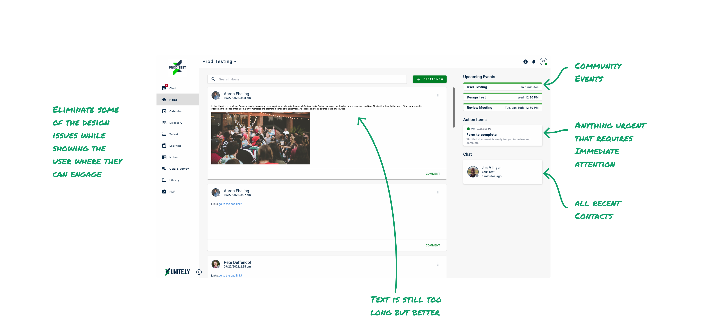
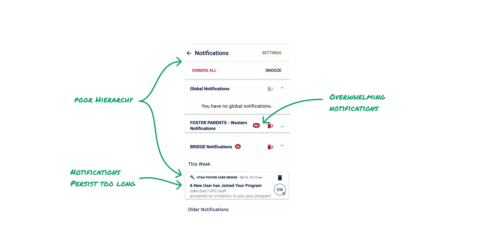
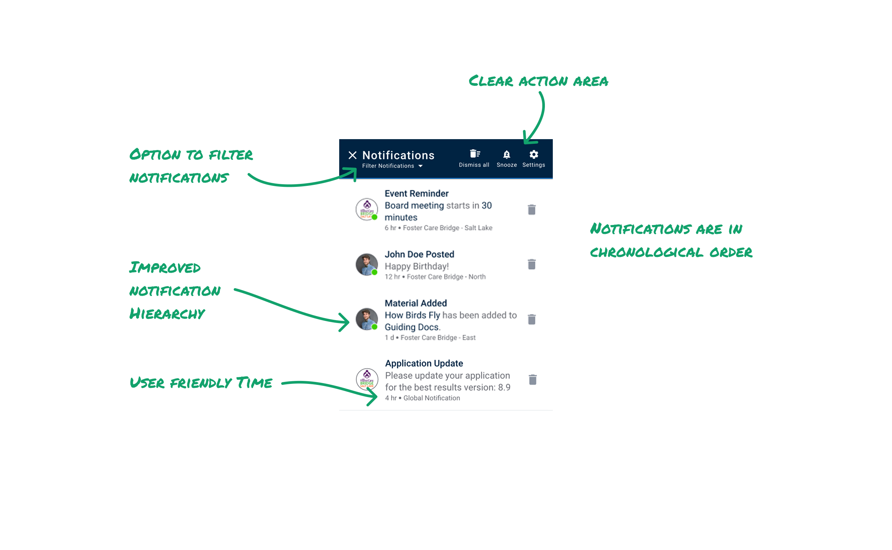

Problem
Unite.ly’s pitch is simple: put all the tools a community needs to connect with and grow its members in one place. The pitch only works if members actually show up — and engagement was flat.
Stakeholders had a solution in mind before I did: redesign the homepage.
The Redesign Everyone Wanted

The critique of the old page was fair. Users didn’t know where to go next, the text ran too wide, and the layout wasted space. So I fixed those things — tightened the posts, added a sidebar surfacing upcoming events, action items, and contacts, and gave users clear places to engage.

Stakeholders loved it. Users liked it.
Engagement didn’t move.
90% of our community members only used mobile. The homepage redesign had polished a desktop experience for the 10% who were already engaged. The problem lived somewhere else.
A Hunch, and a Survey to Check It
I ran a design evaluation on the mobile experience, and one area stood out: notifications. I believed it was turning people off to the program.

A hunch isn’t evidence. A survey was already going out to our clients — I heard about it in time to add three questions before it did.
While the survey was out, I talked with my PM and got the go-ahead to redesign notifications — on one condition: UI changes only.

When I tested the old and new designs with 8 users, they located information an average of 8 seconds faster. They also asked if snooze was a new feature — a good sign of how little of the old screen anyone had been able to take in.
The Real Problem Was Behavior
Then the survey came back. Out of 50+ responses, 20 described their frustration with the notification system. My hypothesis was validated — but the responses pointed past the UI.
Unite.ly’s notification dot only went away when a user clicked the notification or deleted it. But people held onto notifications until they knew they could complete the action.
So notifications piled up, the count climbed, and users disengaged. No amount of hierarchy fixes that — the behavior had to change.
I prototyped and tested new notification behaviors: three clear states — unseen, seen, and seen-and-acted-on — plus automatic deletion after 45 days.

One user said, “This is exactly what we have been needing for a long time.” Users felt more confident engaging with the program — and in keeping their community tools in one place.
Outcome
I brought the findings back to my PM and presented them to stakeholders. We got the go-ahead to build.
Then project funding was cut before the notification behaviors could be implemented. The designs never shipped — but developers and stakeholders came away with a real appreciation for the UX process: a hunch, checked against evidence, before it became a roadmap item.
The homepage taught me the more durable lesson, though. When a redesign doesn’t move the number, the problem usually isn’t the pixels. It’s where you’re standing.